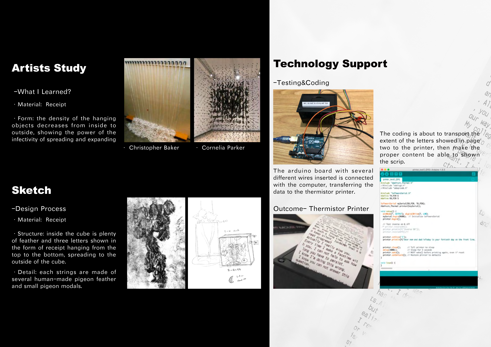

YU
A responsive installation exploring the relationship between sound, space, and human interaction.
Started from January, 2020, COVID-19 widely impacted countless people all over the world. Medical staff sacrificed their personal dedication during the period. YU expresses the greatness of love during the tough time, exploring how sound and space can create meaningful connections.

Research
The research explored how sound and space interact in creating meaningful experiences, focusing on the relationship between human presence and acoustic environments.


Outcome
A responsive installation that creates unique sound experiences based on visitors' movement and interaction, exploring the relationship between sound, space, and human presence.